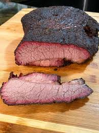

Brisket

This is brisket. It's really good. I smoke using hickory chunks/pellets, because that's my preferred beef flavor profile. Honestly pairs best with a hickory barbecue sauce, but just about any will work. The rub is pretty damn versatile.
What You'll Need
- Smoker
- Pellets/chunks of preferred wood
- Aluminum pan
- Water
- Spray bottle
- Filet knife
- Cutting board
- Aluminum foil or butcher paper
- Shrink wrap
- Meat thermometer probe
- Preferred impliment for removing brisket from smoker
Ingredients
- 1 12-18lbs brisket, whole
- 2 cups Kosher salt
- 2 cups Coarse black pepper
- 3 tbsp Cayenne pepper powder
- 1 cup onion powder
- 1 cup garlic powder
- 2tbsp ground coriander
- Yellow mustard
- Water
- Apple cider vinegar
Steps
- Trim the brisket (as one does).
- In a bowl, mix your spices. Stir with a fork to evenly mix throughout.
- Rub Brisket down with a thin layer of yellow mustard. The mustard flavor burns off, but the mustard acts as a binding agent for your rub.
- Shake your rub evenly and generously on the brisket, patting it in with your hand, rather than rubbing it in.
- Tightly wrap your brisket in shrink wrap, then refrigerate for 24 hours.
- Mix 1/2 cup water and 1/2 cup apple cider vinegar in your spray bottle.
- Heat your smoker to 180 degrees Farenheit.
- Insert your thermometer probe into the brisket.
- Fill your aluminum pan 3/4 of the way with water. Place on the coals/grease trap rack, depending on smoker model.
- Place brisket into smoker and close.
- Mist brisket with vinegar/water mix every 45-60 minutes.
- When internal temp reaches 170 degrees, remove brisket from smoker and tightly wrap with aluminum foil or butcher paper.
- Increase smoker temp to 225 degrees and continue smoking until internal temp reaches 203-206.
- Remove from smoker and cut in 1/4 thick strips, against the grain.
- Alternatively, cut into cubes and serve on Hawaiian Rolls (like a slider) with barbecue sauce.
- Promptly die and go to heaven because the cow you just smoked was a holy symbol, elevating the flesh and blood circulating throughout you to near-deific status.
- Conduct a pseudo-rapture (not like the biblical one, though, because that's pretty different).